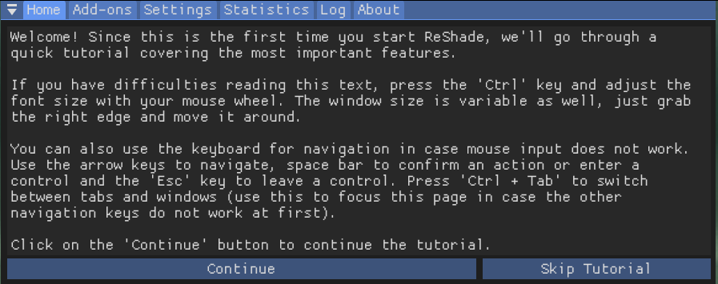
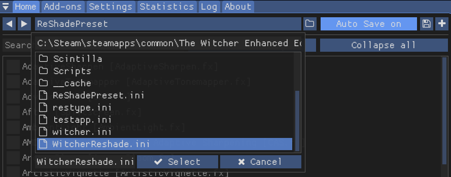
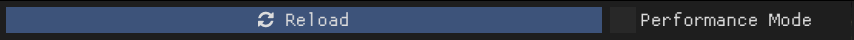
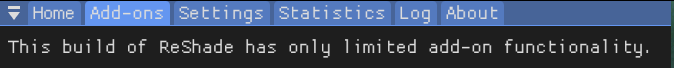
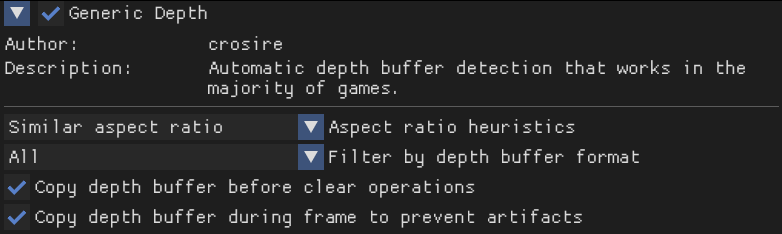

Post-Install Steps
Installing Reshade
- Download the lastest Reshade WITH FULL ADD-ON SUPPORT
- Run the setup tool
- Find and select Witcher.exe inside the system folder of your game. Typically:
"Steam\steamapps\common\The Witcher Enhanced Edition\Data\Override" - Select Vulkan as the rendering api, since we're using dxvk to convert d3d9 commands to vulkan
- Checkmark the following packs
- SweetFX by Ceejay.dk
- Legacy effects
- FXShaders by luluco250
- qUINT by Marty McFly
- Color effects by prod80
- dh-reshade-shaders by AlucardDH
- Insane-Shaders by Lord of Lunacy
- AstrayFX
- iMMERSE by Marty Mcfly
- Click run inside of MO2, from now on only launch the game through MO2. Mods will only load through MO2
- Once loaded into the game, hit "home" on your keyboard to open reshade.
- Click Skip Tutorial 
- Select the dropdown at the top, scroll down until you find WitcherReshade.ini, select the file and click Select 
- Select Performance mode at the bottom of the page. This will fully compile and lock in settings, netting you more performance. If you want to change specific settings in filters you can turn it off and on at your will. 
- Click on the add-ons tab 
- Enable "Copy depth buffer during frame to prevent artifacts", this should also enable "Copy depth buffer before clear operations". This will allow reshade to access the depth buffer and inject ambient occlusion and other effects. 
- That's it! Your game should now be modded and playable as intended. You can continue to add some more overhaul mods that couldn't be included in Wabbajack or continue playing!

Additional Mods - Manual Installation
There are some mods I couldn't include in the WabbaJack installation due to them being hosted on Moddb, so to get the full experience you'll have to install these manually yourself. Fortunately I've left a guide here to do so.
- Click the big red "Download Now" button
- This mod is packaged in an exe file, so we need to handle it differently than we would with a typical loose file mod.
- Create a file called "scabbards mod" somewhere easy to find, like your desktop.
- Execute the file, when it asks for your witcher game location point it to the folder you just made instead.
- Select "The Witcher EE" when it presents you with a dropdown.
- Finish the download and you should be presented with this in your scabbards mod folder
- Right click Data, Select send to and then "Compressed (zipped) folder"
- Name it "Scabbards mod"
- Install "Scabbards mod.zip" into MO2
- Right click DATA and select "set as directory", you should be given the following.
- Click OK